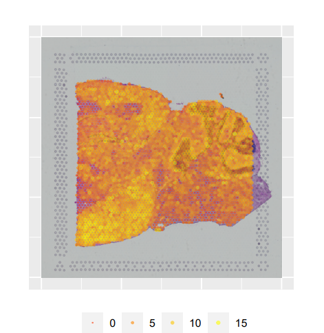
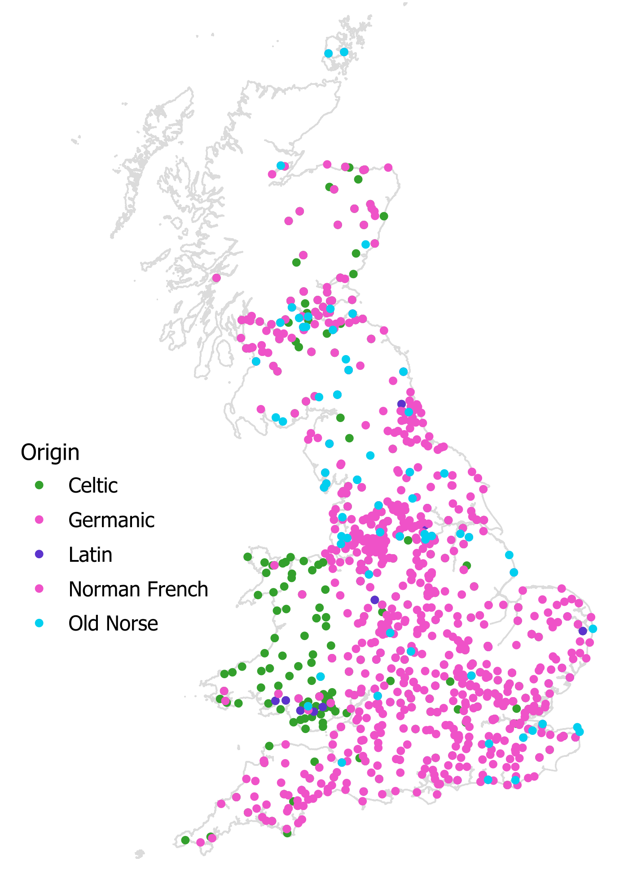
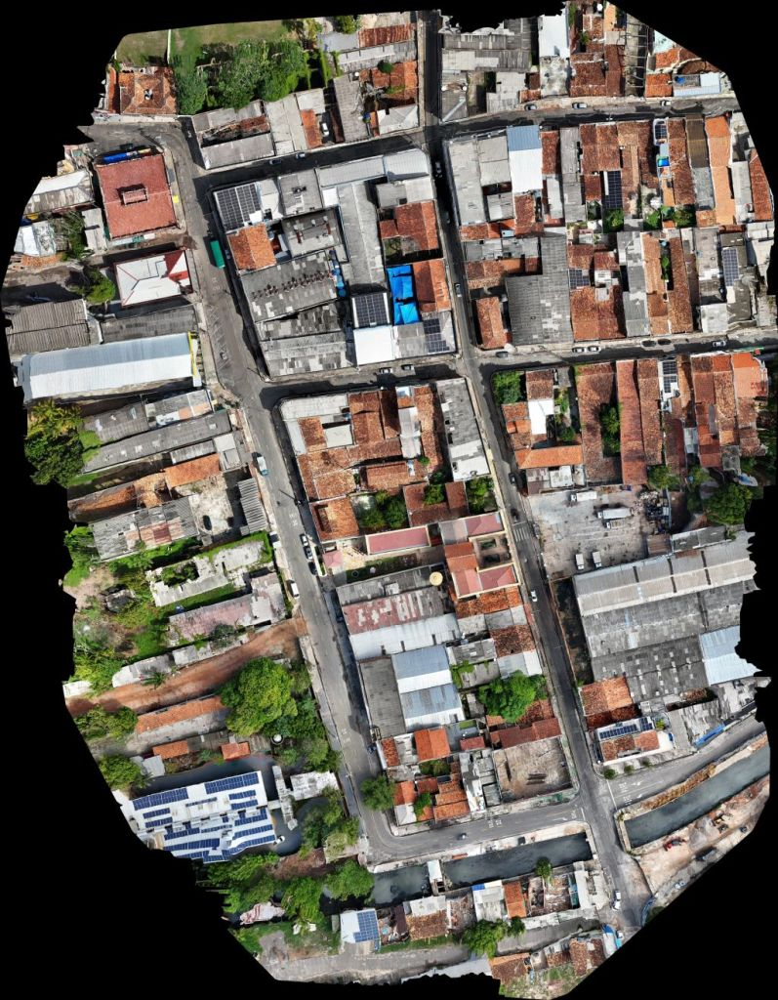
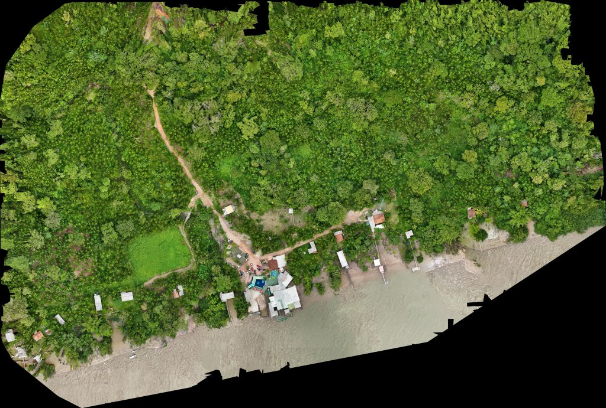

Why Learn GIS?
You’ve made it to this page, so you must at lease be vaguely interested in GIS. So what is it all about, and why should you care?
What is GIS?
GIS is a fantastic tool that allows you to combine your data with other data that has location information, and then use this data to answer questions that you are interested in. Often, just putting location data on a map will reveal patterns that were completely invisible before - those “aha!” moments when everything suddenly makes sense.
Think of GIS as your detective toolkit for understanding the world through the lens of location. Every piece of data has a “where” component, and GIS helps you unlock the stories hidden in that geography.
GIS is Everywhere (Yes, Really Everywhere!)
GIS can be applied to pretty much any area - anything from environmental management, urban planning, health service prevision, emergency management, transport, agriculture, utilities and archaeology to defence.
But here’s where it gets exciting: GIS reaches into areas you might never expect. Space exploration, sports analysis, origin and spread of musical genres, sleep pattern analysis, location based entertainment (Pokemon Go!), gene analysis, carbon accounting, social media and sentiment analysis, autonomous vehicles, event management, sharing historical journeys with new audiences, aquatic and marine management, ethics and surveillance, renewable energy optimisation and even making people happier!
The beauty of GIS is that once you start thinking spatially, you’ll see applications everywhere. That’s the moment you know you’ve caught the GIS bug.


Why Learn GIS? (Because it Changes Everything)
So now we know that GIS is relevant to your subject area, why should you learn it? GIS transforms how you work with data, think about your research questions and find new insights into your data.
Link Data: You can use it to link other data to your data - for example Census data, which can tell you information about who uses your product, (or more importantly who does not use your product), work out whether wind turbines have an impact on bird strikes, or use drones to collect data that would otherwise be out of your reach.


Some images captured by a drone, from OpenAerialMap, a collection of openly licensed drone imagery. These images were captured by Ivan, who ran the drone workshop at FOSS4G 2024 in Belém, Brazil. Urban image, Rural image.
Evaluate What Works: You can also use it to evaluate effectiveness - for example, can everyone access your service or product easily, how much does where you come from impact your opportunities, and try to unpick why some places are more deprived than others. A great example of this is the so called “Glasgow effect” where Glasgow is noticeably unhealthier than most other parts of the UK, even if you take into account deprivation.
Build Compelling Evidence: You can also use it to provide evidence - to show that having more fast food takeaways near schools has an impact on childhood obesity, to show that the areas your GP/shop/council serve are more deprived than other areas, and show that where people come from has an impact on their success.
Tell Stories That Stick: A map can communicate complex ideas instantly. Instead of drowning people in spreadsheets, or paragraphs of text, you can show them a story on a map that they’ll remember and understand immediately. A map is worth a thousand words.

A map created by one of my consultancy clients, showing the relationship between ore sources, the Roman Road and Roman settlements built as a result of this ore, set in the present landscape.
Not Just Learing a Piece of Software, But Learning a New Way of Thinking
Learning GIS isn’t just about mastering software – you’re developing a new way of thinking:
Spatial Intelligence: You’ll start seeing patterns and relationships that others miss. Location becomes a lens through which you understand everything else.
Critical Data Skills: GIS teaches you to question data, spot errors, and dig deeper into what the numbers really mean.
Visual Communication: Creating maps that tell compelling stories is both an art and a science – skills that enhance any career.
Problem-Solving Approaches: GIS challenges you to break down complex problems and find creative, evidence-based solutions.
How to learn GIS?
Now I hope I have convinced you learning GIS is a good thing, so how do you do that? There are several paths, depending on how you learn best:
- Books
- If you want a general introduction to GIS, I’d recommend GIS: Research Methods which provides a non-technical overview of the science and tools behind GIS. It is aimed at researchers, students and academics who do not have a GIS or Geography background, and the first chapter is available for free!
- If you want to go a step further, and want to learn QGIS, I would recommend Discover QGIS 3.x by Kurt Menke , this is a comprehensive up-to-date workbook built for both the classroom and professionals looking to build their skills.
- If you want to take advantage of scripting techniques, I would recommend Using R as a GIS, which shows you how the R programming language can transform your GIS journey, empowering you to create stunning maps, analyse spatial data, and unlock advanced geospatial insights–no prior experience needed!
- Training Courses
- I run live, online training courses in QGIS and R, both at Introductory and Advanced level. Check out the training courses page to see when I am next running a session, and also access Introduction to Spatial Data and Using R as a GIS on demand through InStats.
- Training Materials
- A selection of training materials are available for free, some based on my courses and some from other organisations I have developed materials for.
- Consultancy
- I also offer consultancy and one to one training, where I can work with you to add geospatial analysis to your project and to develop your geospatial analysis toolset. I have worked with academics, universities, private sector and public sector organisations, developing bespoke training solutions, one-to-one tuition or project support to enable my clients to get the best from their geospatial data. Find out more details, or contact me for a chat to see where I can help you.
Your GIS Journey Starts Now
The world is full of spatial patterns waiting to be discovered. Every dataset has a geography. Every question has a “where” component. Learning GIS gives you the tools to explore these connections and the skills to share your discoveries with others.
Whether you’re looking to advance your career, solve problems in your field, or simply see the world through a new lens, GIS offers a journey of constant discovery. The learning curve might seem steep at first, but every “aha!” moment makes it worthwhile.
Best of luck with your GIS journey – I can’t wait to see what you’ll come up with!